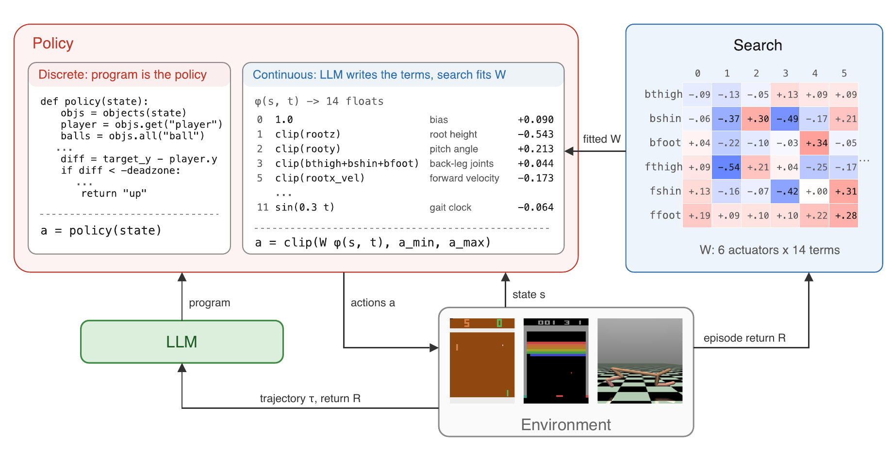
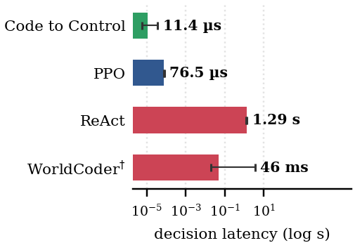

Code to Control selects an action in 11.4 µs, faster than PPO at 76.5 µs. ReAct takes 1.29 s per action.
Recent LLM-based approaches to control either invoke a language model to select actions or synthesize world models that require planning at every decision, introducing latency that can limit real-time use. We introduce Code to Control, an approach that synthesizes Python controllers which execute directly as policies. Code to Control separates program structure from parameters. An LLM synthesizes the controller structure, while derivative-free search fits its parameters for continuous control using feedback from the environment. Once learned, the resulting controllers require neither LLM inference nor planning at decision time, enabling real-time gameplay and, under our timing protocol, faster action selection than a PPO policy. Across a suite of Atari games, Flappy Bird, and MuJoCo tasks, Code to Control outperforms planning-based program synthesis methods, remains competitive with deep reinforcement learning while using fewer environment interactions, transfers across substantial changes in environment dynamics, and scales to complex locomotion tasks.

Our method writes a controller, plays episodes, and uses the trajectories to revise the program. Its numerical parameters can be fit separately from environment feedback when useful, especially in continuous control. There the program is a feature map φ(o, t), and search fits the matrix W that maps features to actuator commands.
Each controller is shown exactly as produced by Code to Control, with scores reported as the median over three runs.
Pong · score +18 · champions/pong.py
# controller.py
import math
def policy(state):
objs = objects(state)
player = objs.get("player")
if player is None:
return "noop"
# Check if there's a ball to track
ball = objs.get("ball")
if ball is None:
# No ball yet; hold center position
return "noop"
# Predict where the ball will be in the near future
# The ball moves with velocity (dx, dy), so in ~10 ticks it will move by (10*dx, 10*dy)
# Lead the ball prediction by a few ticks to account for reaction latency
lead_ticks = 5 # Predict 5 ticks ahead
predicted_ball_y = ball.y + ball.dy * lead_ticks
player_center = player.y
deadzone = 4.0 # Tighter deadzone for more responsive control
if player_center < predicted_ball_y - deadzone:
# Player is above where the ball will be; move down
return "down"
elif player_center > predicted_ball_y + deadzone:
# Player is below where the ball will be; move up
return "up"
else:
# Player is near the predicted ball position; hold position
return "noop"Space Invaders · score 490 · champions/spaceinvaders.py
# controller.py
import math
def policy(state):
objs = objects(state)
player = objs.get("player")
if player is None:
return "noop"
aliens = objs.all("alien")
bullets = objs.all("bullet")
# THREAT ASSESSMENT: detect incoming bullets
incoming_threats = []
for bullet in bullets:
if bullet.approaching(player):
speed = math.sqrt(bullet.dx**2 + bullet.dy**2)
if speed > 0.1:
tti = player.distance_to(bullet) / speed
if tti < 30:
incoming_threats.append((bullet, tti))
incoming_threats.sort(key=lambda x: x[1])
# EVASION: dodge immediate threats
if incoming_threats:
closest_bullet, tti = incoming_threats[0]
if tti < 20:
if closest_bullet.x > player.x:
return "left"
else:
return "right"
# TARGETING: engage aliens
if aliens:
closest_alien = min(aliens, key=lambda a: player.distance_to(a))
if closest_alien.y < player.y - 30: # Alien is above us
dx = closest_alien.x - player.x
horiz_gap = abs(dx)
if horiz_gap < 12:
# Aligned — fire!
return "fire"
elif horiz_gap < 50 and closest_alien.y > -50:
if horiz_gap < 30:
# Very close, fire at angle
if dx > 0:
return "rightfire"
else:
return "leftfire"
else:
# Move to align
if dx > 0:
return "right"
else:
return "left"
else:
# Far alien — move to align slowly
if dx > 0:
return "right"
else:
return "left"
# NO THREATS, NO ALIENS: stay safe
# Shield zone is x ≈ 42–106. Player at x=49 is safe.
# Only recenter if we drift far from the safe zone (> 20 px from shields).
shield_left = 42
shield_right = 106
shield_mid = (shield_left + shield_right) / 2 # 74
safe_zone_left = shield_left - 10
safe_zone_right = shield_right + 10
if player.x < safe_zone_left:
# Drifted too far left, move right to safety
return "right"
elif player.x > safe_zone_right:
# Drifted too far right, move left to safety
return "left"
else:
# Within safe zone — hold position
return "noop"Asterix · score 3,100 · champions/asterix.py
# controller.py
import math
def policy(state):
objs = objects(state)
player = objs.get("player")
if player is None:
return "noop"
consumables = objs.all("consumable")
hazards = objs.all("car") + objs.all("obstacle")
# If no consumables left, we've won — STOP MOVING
if not consumables or state.get("won", False):
return "noop"
# Check for approaching hazards and evade preemptively
for hazard in hazards:
# Use larger safety margin and check approach velocity
if hazard.approaching(player) and player.distance_to(hazard) < 80:
# Approaching hazard within danger zone — evade
if hazard.x > player.x:
# Hazard to the right, move left
if hazard.y > player.y:
return "upleft"
else:
return "downleft"
else:
# Hazard to the left, move right
if hazard.y > player.y:
return "upright"
else:
return "downright"
# Also handle contact/near-contact
if player.touches(hazard, margin=10):
if hazard.x > player.x:
if hazard.y > player.y:
return "upleft"
else:
return "downleft"
else:
if hazard.y > player.y:
return "upright"
else:
return "downright"
# Find the closest consumable
target = None
min_distance = float('inf')
for c in consumables:
dist = player.distance_to(c)
if dist < min_distance:
min_distance = dist
target = c
if target is None:
return "noop"
# Calculate direction to target
dx = target.x - player.x
dy = target.y - player.y
# Larger threshold to reduce oscillation
horizontal_threshold = 5.0
# Move toward target
if abs(dy) > abs(dx):
# Vertical component dominates
if dy > 0: # Target below
if dx > horizontal_threshold:
return "downright"
elif dx < -horizontal_threshold:
return "downleft"
else:
return "down"
else: # Target above
if dx > horizontal_threshold:
return "upright"
elif dx < -horizontal_threshold:
return "upleft"
else:
return "up"
else:
# Horizontal component dominates
if dx > horizontal_threshold:
return "right"
elif dx < -horizontal_threshold:
return "left"
else:
if dy > 0:
return "down"
elif dy < 0:
return "up"
else:
return "noop"Breakout · score 19 · champions/breakout.py
# controller.py
import math
def policy(state):
objs = objects(state)
player = objs.get("player")
if player is None:
return "noop"
# Look for a ball in the state
ball = objs.get("ball")
# If no ball exists yet, fire to start the game
if ball is None:
return "fire"
# Ball exists - track it and position paddle defensively
dx = ball.x - player.x
dy = ball.y - player.y
# Safety margin: if ball is approaching from above or is close to paddle level,
# move aggressively to get under it
# If ball is moving downward and is already close to or below paddle, center under it urgently
if ball.dy > 0 and dy > -10: # dy > -10 means ball is below or very close to paddle
# Ball is coming down at us; position paddle under its x
if abs(dx) > 5:
return "left" if dx < 0 else "right"
else:
return "noop"
# Normal case: ball is above us, track its horizontal motion
if ball.y < player.y:
# Ball approaching horizontally toward us from the left
if ball.dx < 0 and dx < 0:
return "left"
# Ball approaching horizontally toward us from the right
if ball.dx > 0 and dx > 0:
return "right"
# Ball above but may be heading to either side; position under it
if abs(dx) > 10:
return "left" if dx < 0 else "right"
# Default: do nothing
return "noop"Fishing Derby · score +31 · champions/fishingderby.py
# controller.py
import math
def policy(state):
objs = objects(state)
# Get player one's hook
hook = objs.get("playeronehook")
if hook is None:
return "noop"
# Get all fish
fish_list = objs.all("fish")
if not fish_list:
return "noop"
# Find nearest fish
nearest_fish = None
min_dist = float('inf')
for fish in fish_list:
dist = hook.distance_to(fish)
if dist < min_dist:
min_dist = dist
nearest_fish = fish
if nearest_fish is None:
return "noop"
# Calculate direction to nearest fish
dx = nearest_fish.x - hook.x
dy = nearest_fish.y - hook.y
angle = math.atan2(dy, dx)
angle_deg = math.degrees(angle) % 360
# Map angle to direction and fire action
if angle_deg < 22.5 or angle_deg >= 337.5:
direction = "right"
fire_action = "rightfire"
elif angle_deg < 67.5:
direction = "downright"
fire_action = "downrightfire"
elif angle_deg < 112.5:
direction = "down"
fire_action = "downfire"
elif angle_deg < 157.5:
direction = "downleft"
fire_action = "downleftfire"
elif angle_deg < 202.5:
direction = "left"
fire_action = "leftfire"
elif angle_deg < 247.5:
direction = "upleft"
fire_action = "upleftfire"
elif angle_deg < 292.5:
direction = "up"
fire_action = "upfire"
else:
direction = "upright"
fire_action = "uprightfire"
# Fire when close enough AND reasonably well-aligned
if min_dist < 120:
angle_to_cardinal = min(
abs(angle_deg),
abs(angle_deg - 45),
abs(angle_deg - 90),
abs(angle_deg - 135),
abs(angle_deg - 180),
abs(angle_deg - 225),
abs(angle_deg - 270),
abs(angle_deg - 315),
abs(360 - angle_deg)
)
# Fire if within 45 degrees of a cardinal/diagonal direction
if angle_to_cardinal < 45:
return fire_action
# Move toward the nearest fish
return directionFreeway · score 22 · champions/freeway.py
# controller.py
import math
def policy(state):
"""
Frogger-like game with stationary cars blocking the road.
Strategy:
- Move UP toward y=0 (goal) when possible
- When blocked by stationary cars and stuck, move DOWN to reset
- Check all chickens to detect if progress is truly blocked
"""
objs = objects(state)
chickens = objs.all("chicken")
if not chickens:
return "noop"
cars = objs.all("car")
# === COLLISION AVOIDANCE ===
# If touching a car, move down immediately
for chicken in chickens:
for car in cars:
if chicken.touches(car, margin=3):
return "down"
# === PROXIMITY THREAT ===
# If any car is very close and approaching, escape down
for chicken in chickens:
for car in cars:
dist = chicken.distance_to(car)
if dist < 12 and car.approaching(chicken):
return "down"
# === STUCK DETECTION ===
# Track the best y-position achieved by any chicken
if "_best_y" not in state:
state["_best_y"] = min(c.y for c in chickens)
state["_stuck_ticks"] = 0
current_best_y = min(c.y for c in chickens)
if current_best_y < state["_best_y"]:
# Progress made: reset stuck counter
state["_best_y"] = current_best_y
state["_stuck_ticks"] = 0
else:
# No progress
state["_stuck_ticks"] += 1
# If stuck for too long, reset by moving down
if state["_stuck_ticks"] >= 4:
state["_stuck_ticks"] = 0
state["_best_y"] = min(c.y for c in chickens)
return "down"
# === DEFAULT: MOVE UP ===
return "up"Flappy Bird · score 311 · champions/flappy.py
# controller.py
import math
def policy(state):
objs = objects(state)
bird = objs.get("bird")
if bird is None:
return "noop"
pipes = objs.all("pipe")
bird_y = bird.y
bird_dy = bird.dy
bird_x = bird.x
# AGGRESSIVE ceiling avoidance: keep bird well away from top
# At y < 80, never flap; at y < 100 only in emergency
if bird_y < 80:
return "noop"
if bird_y < 100 and bird_dy < 0:
return "noop"
# Hard ground bounds
if bird_y > 500:
return "flap"
if pipes:
# Filter pipes ahead of the bird
pipes_ahead = [p for p in pipes if p.x > bird_x - 50]
if pipes_ahead:
pipes_ahead.sort(key=lambda p: p.x)
# Identify pipe pair: upper and lower pipe at similar x
next_upper = None
next_lower = None
for i in range(len(pipes_ahead)):
for j in range(i + 1, len(pipes_ahead)):
p1, p2 = pipes_ahead[i], pipes_ahead[j]
if abs(p1.x - p2.x) < 30:
if p1.y < p2.y:
next_upper, next_lower = p1, p2
else:
next_upper, next_lower = p2, p1
break
if next_upper:
break
if next_upper and next_lower:
# Gap geometry
upper_bottom = next_upper.y + next_upper.h / 2.0
lower_top = next_lower.y - next_lower.h / 2.0
gap_center = (upper_bottom + lower_top) / 2.0
gap_height = lower_top - upper_bottom
safe_margin = max(20, gap_height * 0.25)
dist_to_pipe = next_upper.x - bird_x
# Close range: precise emergency control only
if dist_to_pipe < 80:
if bird_y < upper_bottom + safe_margin:
return "noop"
if bird_y > lower_top - safe_margin:
return "flap"
return "noop"
# Moderate range: steer toward center, but conservatively
elif dist_to_pipe < 180:
target = gap_center
if bird_y > target + 30:
return "flap"
if bird_dy > 3.0 and bird_y > target - 20:
return "noop"
return "noop"
# Far range: position in middle of gap proactively
else:
target_y = gap_center
if bird_y > target_y + 50:
return "flap"
if bird_dy > 0.5:
return "noop"
return "noop"
# No pipe ahead; maintain mid-altitude conservatively
if bird_y > 280:
return "flap"
if bird_dy > 1.5:
return "noop"
return "noop"Pong 21–0 · the best of the three Pong runs · score 21 · champions/pong_best.py
# controller.py
import math
def policy(state):
objs = objects(state)
player = objs.get("player")
if player is None:
return 'noop'
# Primary objective: track ball
ball = objs.get("ball")
if ball is not None:
# Lookahead 1 tick to anticipate ball motion (more responsive)
lookahead_ticks = 1
predicted_ball_y = ball.y + ball.dy * lookahead_ticks
# Vertical distance from player center to predicted ball position
dy = predicted_ball_y - player.y
# Tighter threshold to reduce oscillation while maintaining responsiveness
threshold = 7
if dy > threshold:
return 'down'
elif dy < -threshold:
return 'up'
else:
return 'noop'
# No ball present: hold position
return 'noop'After a controller is learned, we change Flappy Bird's gravity and other dynamics. The controller adapts in one of two ways. Often the program is robust enough to survive as written. Otherwise our method refits only its numeric constants, with no language-model calls. Reversed gravity is the exception since it needs a new program.
Heavier gravity
Program unchanged. It survives the full episode.
Light gravity
Program unchanged. It survives the full episode.
Narrower gap
Program unchanged. It survives the full episode.
Gravity reversed
Program unchanged. It crashes at step 22, shown at half speed.
Refitting adapts the program's constants, which lets it survive the full episode again. Each tab plays the same stretch of the episode with the original constants and with the refit ones. The code below shows that only numbers changed.
Before refitting
Program unchanged. It crashes at step 3,605.
After refitting
Constants refit. It survives the full episode.
Run 2 · 4 constants changed · original: champions/flappy_transfer/run2.py
# controller.py
import math
def policy(state):
bird = objects(state).get("bird")
pipes = objects(state).all("pipe")
if bird is None:
return "noop"
- if len(pipes) < 2:
+ if len(pipes) < 1.8:
return "noop"
bird_x = bird.x
bird_y = bird.y
bird_dy = bird.dy
# Find the next pipe pair ahead (or current) relative to bird
# Pipes come in pairs: [0,1], [2,3], etc. (top, bottom)
# Find the pair where the bird will soon need to fit through
- next_pair_idx = 0
+ next_pair_idx = -1
min_distance = float('inf')
for i in range(0, len(pipes) - 1, 2):
top_pipe = pipes[i]
bottom_pipe = pipes[i + 1]
# Use the rightmost edge of the pipe pair as reference
- pipe_right = max(top_pipe.x + top_pipe.w / 2.0, bottom_pipe.x + bottom_pipe.w / 2.0)
+ pipe_right = max(top_pipe.x + top_pipe.w / 1.8, bottom_pipe.x + bottom_pipe.w / 1.8)
# We care about pipes that are ahead of or very close to the bird
- if pipe_right >= bird_x - 50: # Lookahead margin
+ if pipe_right >= bird_x - 25: # Lookahead margin
distance = pipe_right - bird_x
if distance < min_distance:
min_distance = distance
next_pair_idx = i
top_pipe = pipes[next_pair_idx]
bottom_pipe = pipes[next_pair_idx + 1]
# Calculate gap boundaries
- gap_top = top_pipe.y + top_pipe.h / 2.0 # bottom edge of top pipe
- gap_bottom = bottom_pipe.y - bottom_pipe.h / 2.0 # top edge of bottom pipe
- gap_center = (gap_top + gap_bottom) / 2.0
+ gap_top = top_pipe.y + top_pipe.h / 1.8 # bottom edge of top pipe
+ gap_bottom = bottom_pipe.y - bottom_pipe.h / 1.8 # top edge of bottom pipe
+ gap_center = (gap_top + gap_bottom) / 1.8
# Safety margins (in pixels)
- safe_margin = 15.0
+ safe_margin = -60
# Flap if bird is below safe center OR falling toward bottom pipe
# Don't flap if already above the gap center (avoid over-rising)
- if bird_y > gap_center + safe_margin and bird_dy >= -2.0:
+ if bird_y > gap_center + safe_margin and bird_dy >= -1.8:
return "flap"
return "noop"Before refitting
Program unchanged. It crashes at step 18,133.
After refitting
Constants refit. It survives the full episode.
Run 2 · 4 constants changed · original: champions/flappy_transfer/run2.py
# controller.py
import math
def policy(state):
bird = objects(state).get("bird")
pipes = objects(state).all("pipe")
if bird is None:
return "noop"
- if len(pipes) < 2:
+ if len(pipes) < 1.8:
return "noop"
bird_x = bird.x
bird_y = bird.y
bird_dy = bird.dy
# Find the next pipe pair ahead (or current) relative to bird
# Pipes come in pairs: [0,1], [2,3], etc. (top, bottom)
# Find the pair where the bird will soon need to fit through
- next_pair_idx = 0
+ next_pair_idx = -1
min_distance = float('inf')
for i in range(0, len(pipes) - 1, 2):
top_pipe = pipes[i]
bottom_pipe = pipes[i + 1]
# Use the rightmost edge of the pipe pair as reference
- pipe_right = max(top_pipe.x + top_pipe.w / 2.0, bottom_pipe.x + bottom_pipe.w / 2.0)
+ pipe_right = max(top_pipe.x + top_pipe.w / 1.8, bottom_pipe.x + bottom_pipe.w / 1.8)
# We care about pipes that are ahead of or very close to the bird
- if pipe_right >= bird_x - 50: # Lookahead margin
+ if pipe_right >= bird_x - 6.25: # Lookahead margin
distance = pipe_right - bird_x
if distance < min_distance:
min_distance = distance
next_pair_idx = i
top_pipe = pipes[next_pair_idx]
bottom_pipe = pipes[next_pair_idx + 1]
# Calculate gap boundaries
- gap_top = top_pipe.y + top_pipe.h / 2.0 # bottom edge of top pipe
- gap_bottom = bottom_pipe.y - bottom_pipe.h / 2.0 # top edge of bottom pipe
- gap_center = (gap_top + gap_bottom) / 2.0
+ gap_top = top_pipe.y + top_pipe.h / 1.8 # bottom edge of top pipe
+ gap_bottom = bottom_pipe.y - bottom_pipe.h / 1.8 # top edge of bottom pipe
+ gap_center = (gap_top + gap_bottom) / 1.8
# Safety margins (in pixels)
- safe_margin = 15.0
+ safe_margin = -15
# Flap if bird is below safe center OR falling toward bottom pipe
# Don't flap if already above the gap center (avoid over-rising)
- if bird_y > gap_center + safe_margin and bird_dy >= -2.0:
+ if bird_y > gap_center + safe_margin and bird_dy >= -1.8:
return "flap"
return "noop"Before refitting
Program unchanged. It crashes at step 18,117.
After refitting
Constants refit. It survives the full episode.
Run 2 · 3 constants changed · original: champions/flappy_transfer/run2.py
# controller.py
import math
def policy(state):
bird = objects(state).get("bird")
pipes = objects(state).all("pipe")
if bird is None:
return "noop"
if len(pipes) < 2:
return "noop"
bird_x = bird.x
bird_y = bird.y
bird_dy = bird.dy
# Find the next pipe pair ahead (or current) relative to bird
# Pipes come in pairs: [0,1], [2,3], etc. (top, bottom)
# Find the pair where the bird will soon need to fit through
- next_pair_idx = 0
+ next_pair_idx = -1
min_distance = float('inf')
for i in range(0, len(pipes) - 1, 2):
top_pipe = pipes[i]
bottom_pipe = pipes[i + 1]
# Use the rightmost edge of the pipe pair as reference
pipe_right = max(top_pipe.x + top_pipe.w / 2.0, bottom_pipe.x + bottom_pipe.w / 2.0)
# We care about pipes that are ahead of or very close to the bird
- if pipe_right >= bird_x - 50: # Lookahead margin
+ if pipe_right >= bird_x - 25: # Lookahead margin
distance = pipe_right - bird_x
if distance < min_distance:
min_distance = distance
next_pair_idx = i
top_pipe = pipes[next_pair_idx]
bottom_pipe = pipes[next_pair_idx + 1]
# Calculate gap boundaries
gap_top = top_pipe.y + top_pipe.h / 2.0 # bottom edge of top pipe
gap_bottom = bottom_pipe.y - bottom_pipe.h / 2.0 # top edge of bottom pipe
gap_center = (gap_top + gap_bottom) / 2.0
# Safety margins (in pixels)
- safe_margin = 15.0
+ safe_margin = -16.875
# Flap if bird is below safe center OR falling toward bottom pipe
# Don't flap if already above the gap center (avoid over-rising)
if bird_y > gap_center + safe_margin and bird_dy >= -2.0:
return "flap"
return "noop"| Physics change | Run 1 | Run 2 | Run 3 |
|---|---|---|---|
| Heavier gravity gravity ×1.5 | ✓ | ✓ | ✓ |
| Drag | ✓ | ✓ | ✓ |
| Heavier gravity mid-flight gravity ×1.5 from step 500 | ✓ | ✓ | ✓ |
| Narrower gap gap ×0.71 | ✓ | ✓ | ✓ |
| Weaker flap flap strength ×0.61 | ✓ | 3,605 → ✓ | ✓ |
| Light gravity gravity ×0.5, flap strength ×0.6 | ✓ | 18,133 → ✓ | 8,853 → 17,109 |
| Faster pipes pipe speed ×1.5 | ✓ | 18,117 → ✓ | 530 → 1,691 |
| Gravity reversed | 22 → 27 | 22 → 27 | 22 → 27 |
Steps survived, before → after numerical parameter refitting. ✓ is the full 20,000-step episode.
Here the controller outputs torques. The model writes a Python feature map that turns the observation into 14 numbers, and derivative-free search fits the matrix that maps them to torques.
Humanoid
return 472.92 · −0.44 m forward
The median episode ends after 1.5 s, when the body falls.
View the feature mapReturns are medians over ten test episodes.
HalfCheetah · return 3,958.95 · 212.55 m forward · 14 features, fitted 6×14 matrix in halfcheetah.json · champions/mujoco/halfcheetah.py
import math
def terms(state, t):
def g(k):
try:
v = state[k][0]
except Exception:
return 0.0
if v is None:
return 0.0
try:
f = float(v)
except Exception:
return 0.0
if not math.isfinite(f):
return 0.0
return f
# raw positions
rootz = g('rootz')
rooty = g('rooty')
bthigh = g('bthigh')
bshin = g('bshin')
bfoot = g('bfoot')
fthigh = g('fthigh')
fshin = g('fshin')
ffoot = g('ffoot')
# velocities
vx = g('rootx_velocity')
vz = g('rootz_velocity')
wy = g('rooty_angular_velocity')
wbt = g('bthigh_angular_velocity')
wbs = g('bshin_angular_velocity')
wbf = g('bfoot_angular_velocity')
wft = g('fthigh_angular_velocity')
wfs = g('fshin_angular_velocity')
wff = g('ffoot_angular_velocity')
def sat(x, s=1.0):
return math.tanh(x / s)
out = []
# 0: constant bias
out.append(1.0)
# 1: root height (posture)
out.append(sat(rootz, 0.2))
# 2: root pitch angle
out.append(sat(rooty, 0.3))
# 3: sum of back-leg joint angles
out.append(sat(bthigh + bshin + bfoot, 1.0))
# 4: sum of front-leg joint angles
out.append(sat(fthigh + fshin + ffoot, 1.0))
# 5: forward velocity (drives reward)
out.append(sat(vx, 1.0))
# 6: vertical velocity
out.append(sat(vz, 1.0))
# 7: pitch angular velocity
out.append(sat(wy, 2.0))
# 8: combined back-leg angular velocities
out.append(sat(wbt + wbs + wbf, 10.0))
# 9: combined front-leg angular velocities
out.append(sat(wft + wfs + wff, 10.0))
# 10: coupling term (posture x forward velocity)
out.append(sat(rooty * vx, 0.5))
# 11: periodic gait clock
out.append(math.sin(0.3 * t))
# 12: periodic gait clock, second frequency / phase
out.append(math.cos(0.15 * t))
# 13: front-back leg antisymmetry (differential drive)
out.append(sat((fthigh - bthigh) + 0.5 * (fshin - bshin), 1.0))
return [x if math.isfinite(x) else 0.0 for x in out]Swimmer · return 320.53 · 12.83 m forward · 14 features, fitted 2×14 matrix in swimmer.json · champions/mujoco/swimmer.py
import math
def terms(state, t):
def g(k):
try:
v = state[k][0]
if v is None:
return 0.0
v = float(v)
if not math.isfinite(v):
return 0.0
return v
except Exception:
return 0.0
ta = g('tip_angle')
r1 = g('rotor1_angle')
r2 = g('rotor2_angle')
vx = g('tip_velocity_x')
vy = g('tip_velocity_y')
wt = g('tip_angular_velocity')
w1 = g('rotor1_angular_velocity')
w2 = g('rotor2_angular_velocity')
def clip(x, lo=-3.0, hi=3.0):
return max(lo, min(hi, x))
out = []
# 1. constant bias
out.append(1.0)
# 2. tip angle
out.append(clip(ta))
# 3. sin of tip angle (gravity-like restoring)
out.append(math.sin(ta))
# 4. rotor angle difference
out.append(clip(r1 - r2))
# 5. tip angular velocity
out.append(clip(wt))
# 6. rotor1 angular velocity (scaled)
out.append(clip(0.2 * w1))
# 7. rotor2 angular velocity (scaled)
out.append(clip(0.2 * w2))
# 8. tip vy
out.append(clip(vy))
# 9. tip vx
out.append(clip(vx))
# 10. product tip_angle * tip_angular_velocity
out.append(clip(ta * wt))
# 11. difference of rotor angular velocities (scaled)
out.append(clip(0.15 * (w1 - w2)))
# 12. periodic term
out.append(math.sin(0.3 * t))
# 13. second periodic term, different freq + phase
out.append(math.cos(0.11 * t + 1.0))
# 14. saturating combined velocity magnitude
out.append(math.tanh(0.3 * (abs(wt) + abs(vy))))
return [float(x) if math.isfinite(x) else 0.0 for x in out]Ant · return 1,003.93 · 10.47 m forward · 14 features, fitted 8×14 matrix in ant.json · champions/mujoco/ant.py
import math
def terms(state, t):
def g(k):
try:
v = state[k][0] if isinstance(state[k], (list, tuple)) else state[k]
v = float(v)
if not math.isfinite(v):
return 0.0
return v
except Exception:
return 0.0
def clip(x, lo=-3.0, hi=3.0):
if x < lo: return lo
if x > hi: return hi
return x
rz = g('root_z')
qw = g('root_quat_w')
qx = g('root_quat_x')
qy = g('root_quat_y')
qz = g('root_quat_z')
h1, h2, h3, h4 = g('hip_1'), g('hip_2'), g('hip_3'), g('hip_4')
a1, a2, a3, a4 = g('ankle_1'), g('ankle_2'), g('ankle_3'), g('ankle_4')
vx, vy, vz = g('root_velocity_x'), g('root_velocity_y'), g('root_velocity_z')
wx, wy, wz = g('root_angular_velocity_x'), g('root_angular_velocity_y'), g('root_angular_velocity_z')
hv1 = g('hip_1_angular_velocity')
av1 = g('ankle_1_angular_velocity')
hv2 = g('hip_2_angular_velocity')
av2 = g('ankle_2_angular_velocity')
hv3 = g('hip_3_angular_velocity')
av3 = g('ankle_3_angular_velocity')
hv4 = g('hip_4_angular_velocity')
av4 = g('ankle_4_angular_velocity')
out = []
# 1. constant bias
out.append(1.0)
# 2. raw height, centered near typical standing ~0.9
out.append(clip(rz - 0.9))
# 3. tilt proxy: deviation of upright quaternion
out.append(clip(1.0 - qw))
# 4. combined joint posture (mean hip)
out.append(clip(0.25 * (h1 + h2 + h3 + h4)))
# 5. mean ankle posture
out.append(clip(0.25 * (a1 + a2 + a3 + a4)))
# 6. linear velocity magnitude (saturated)
out.append(math.tanh(math.sqrt(vx*vx + vy*vy + vz*vz)))
# 7. angular velocity of body, tanh-squashed sum
out.append(math.tanh(wx + wy + wz))
# 8. periodic term, base frequency
out.append(math.sin(0.2 * t))
# 9. periodic term, second frequency + phase shift
out.append(math.cos(0.07 * t + 0.5))
# 10. product/coupling: tilt * forward velocity
out.append(clip(qx * vx + qy * vy))
# 11. joint-velocity aggregate (tanh)
out.append(math.tanh(0.1 * (hv1 + hv2 + hv3 + hv4)))
# 12. ankle-velocity aggregate (tanh)
out.append(math.tanh(0.1 * (av1 + av2 + av3 + av4)))
# 13. quaternion yaw component (raw)
out.append(clip(qz))
# 14. saturating growth in t
out.append(math.tanh(0.01 * t))
return [float(x) if math.isfinite(x) else 0.0 for x in out]Hopper · return 1,155.40 · 1.46 m forward · 14 features, fitted 3×14 matrix in hopper.json · champions/mujoco/hopper.py
import math
def terms(state, t):
def g(k):
try:
v = state[k][0]
if v is None:
return 0.0
v = float(v)
if not math.isfinite(v):
return 0.0
return v
except Exception:
return 0.0
def clip(x, lo=-3.0, hi=3.0):
if x < lo: return lo
if x > hi: return hi
return x
h = g('torso_height')
ta = g('torso_angle')
tha = g('thigh_angle')
la = g('leg_angle')
fa = g('foot_angle')
vx = g('torso_velocity_x')
vz = g('torso_velocity_z')
tav = g('torso_angular_velocity')
thav = g('thigh_angular_velocity')
lav = g('leg_angular_velocity')
fav = g('foot_angular_velocity')
out = []
# 0: constant bias
out.append(1.0)
# 1: torso height deviation from upright (~1.25 nominal)
out.append(clip(h - 1.25))
# 2: torso angle (posture)
out.append(clip(ta))
# 3: thigh angle
out.append(clip(tha))
# 4: leg angle
out.append(clip(la))
# 5: foot angle
out.append(clip(fa))
# 6: torso angular velocity (normalised)
out.append(clip(tav / 4.0))
# 7: thigh angular velocity (normalised)
out.append(clip(thav / 4.0))
# 8: leg + foot angular velocity combo (normalised)
out.append(clip((lav + fav) / 4.0))
# 9: horizontal velocity
out.append(clip(vx))
# 10: product of torso angle and angular velocity (damping-ish)
out.append(clip(ta * tav))
# 11: periodic term
out.append(math.sin(2.0 * math.pi * t / 20.0))
# 12: second periodic term, different freq + phase
out.append(math.cos(2.0 * math.pi * t / 7.0 + 0.5))
# 13: saturating nonlinearity of posture (angle sum)
out.append(math.tanh(ta + tha + la))
return [float(x) if math.isfinite(x) else 0.0 for x in out]Walker2d · return 1,388.54 · 3.12 m forward · 14 features, fitted 6×14 matrix in walker2d.json · champions/mujoco/walker2d.py
import math
def terms(state, t):
def g(k):
try:
v = state[k][0]
except Exception:
return 0.0
if v is None or not math.isfinite(v):
return 0.0
return float(v)
def clip(x, lo=-1.0, hi=1.0):
return lo if x < lo else (hi if x > hi else x)
# Raw postural fields
th = g('torso_height')
ta = g('torso_angle')
rt = g('right_thigh_angle')
lt = g('left_thigh_angle')
rl = g('right_leg_angle')
ll = g('left_leg_angle')
# Velocities (scaled to O(1); angular velocities saturate at +-10)
tvx = g('torso_velocity_x')
tvz = g('torso_velocity_z')
tav = g('torso_angular_velocity') / 10.0
rtav = g('right_thigh_angular_velocity') / 10.0
ltav = g('left_thigh_angular_velocity') / 10.0
out = []
# 0: constant bias
out.append(1.0)
# 1: torso upright error (height offset from ~1.25 nominal)
out.append(clip(th - 1.25, -2.0, 2.0))
# 2: torso lean angle
out.append(clip(ta, -3.0, 3.0))
# 3: torso angular velocity (normalised)
out.append(clip(tav, -1.5, 1.5))
# 4: left-right thigh difference (drives symmetric gait)
out.append(clip(rt - lt, -3.0, 3.0))
# 5: left-right leg difference
out.append(clip(rl - ll, -3.0, 3.0))
# 6: forward velocity
out.append(clip(tvx, -3.0, 3.0))
# 7: vertical velocity
out.append(clip(tvz, -3.0, 3.0))
# 8: periodic drive (primary gait frequency)
out.append(math.sin(2.0 * math.pi * t / 20.0))
# 9: periodic drive, phase-shifted (quadrature)
out.append(math.cos(2.0 * math.pi * t / 20.0))
# 10: periodic drive, slower frequency
out.append(math.sin(2.0 * math.pi * t / 47.0))
# 11: product of lean and angular velocity (restoring/damping coupling)
out.append(clip(ta * tav, -3.0, 3.0))
# 12: thigh angular-velocity asymmetry
out.append(clip(rtav - ltav, -2.0, 2.0))
# 13: saturating height-times-lean (fall indicator via tanh-like)
out.append(math.tanh(ta * (1.25 - th)))
# Final safety pass
safe = []
for v in out:
if not math.isfinite(v):
v = 0.0
safe.append(float(v))
return safeHumanoid · return 472.92 · −0.44 m forward · 14 features, fitted 17×14 matrix in humanoid.json · champions/mujoco/humanoid.py
import math
def terms(state, t):
def g(k, d=0.0):
try:
v = state.get(k, d)
if isinstance(v, list):
v = v[0] if v else d
v = float(v)
if not math.isfinite(v):
return d
return v
except Exception:
return d
def clip(x, lo=-5.0, hi=5.0):
if not math.isfinite(x):
return 0.0
return lo if x < lo else (hi if x > hi else x)
# raw pose fields (normalised-ish)
root_z = g("root_z", 1.0)
abdomen_y = g("abdomen_y")
r_knee = g("right_knee")
l_knee = g("left_knee")
r_hip_y = g("right_hip_y")
l_hip_y = g("left_hip_y")
# velocities
rvz = g("root_velocity_z")
ravy = g("root_angular_velocity_y")
aby_av = g("abdomen_y_angular_velocity")
r_knee_av = g("right_knee_angular_velocity")
l_knee_av = g("left_knee_angular_velocity")
out = []
# 1: constant bias
out.append(1.0)
# 2: upright height error (saturating)
out.append(clip(root_z - 1.2))
# 3: torso pitch
out.append(clip(abdomen_y))
# 4: knee difference (asymmetry)
out.append(clip(0.5 * (r_knee - l_knee)))
# 5: hip_y sum (both legs forward/back)
out.append(clip(0.3 * (r_hip_y + l_hip_y)))
# 6: vertical velocity (falling), clipped
out.append(clip(0.3 * rvz))
# 7: angular velocity y (tumbling), tanh-saturated
out.append(math.tanh(0.2 * ravy))
# 8: abdomen angular velocity, tanh
out.append(math.tanh(0.1 * aby_av))
# 9: knee angular velocity sum
out.append(math.tanh(0.1 * (r_knee_av + l_knee_av)))
# 10: periodic term (gait clock)
out.append(math.sin(0.3 * t))
# 11: periodic term, different freq / phase
out.append(math.cos(0.15 * t))
# 12: product of pitch and vertical velocity (coupling)
out.append(clip(math.tanh(abdomen_y) * math.tanh(0.3 * rvz)))
# 13: quadratic height penalty (saturating bowl)
dz = root_z - 1.2
out.append(clip(-(dz * dz)))
# 14: slow saturating growth toward 1
out.append(math.tanh(0.01 * t))
return [float(x) if math.isfinite(x) else 0.0 for x in out]Humanoid Standup · return 127,370 · 14 features, fitted 17×14 matrix in humanoidstandup.json · champions/mujoco/humanoidstandup.py
import math
def terms(state, t):
def g(k, d=0.0):
try:
v = state.get(k, d)
if isinstance(v, list):
v = v[0]
v = float(v)
if not math.isfinite(v):
return d
return v
except Exception:
return d
def clip(x, lo=-5.0, hi=5.0):
if x < lo: return lo
if x > hi: return hi
return x
def sat(x):
# smooth saturating nonlinearity, O(1)
return math.tanh(x)
# raw postural state
rz = g('root_z')
ab_y = g('abdomen_y')
ab_x = g('abdomen_x')
rhy = g('right_hip_y')
lhy = g('left_hip_y')
rk = g('right_knee')
lk = g('left_knee')
qw = g('root_quat_w', 1.0)
qx = g('root_quat_x')
qz = g('root_quat_z')
# velocities
rvx = g('root_velocity_x')
rvz = g('root_velocity_z')
ravx = g('root_angular_velocity_x')
ravy = g('root_angular_velocity_y')
abyv = g('abdomen_y_angular_velocity')
rhyv = g('right_hip_y_angular_velocity')
lhyv = g('left_hip_y_angular_velocity')
out = []
# 1. constant bias
out.append(1.0)
# 2. root height deviation from nominal (~0.1) -- upright drive
out.append(clip((rz - 0.1) * 10.0))
# 3. torso pitch (abdomen_y) -- posture
out.append(clip(ab_y))
# 4. torso roll (abdomen_x)
out.append(clip(ab_x))
# 5. difference of hips (gait antisymmetry)
out.append(clip(rhy - lhy))
# 6. sum of knees (crouch level), saturated
out.append(sat(rk + lk))
# 7. forward velocity, saturated
out.append(sat(rvx))
# 8. vertical velocity
out.append(clip(rvz))
# 9. root angular velocity (roll+pitch) mixed
out.append(clip((ravx + ravy) * 0.3))
# 10. abdomen pitch rate damping term
out.append(clip(abyv * 0.2))
# 11. hip velocity antisymmetry (gait phase feedback)
out.append(clip((rhyv - lhyv) * 0.2))
# 12. periodic term (walking clock)
out.append(math.sin(0.3 * t))
# 13. second periodic term, different freq + phase
out.append(math.cos(0.15 * t + 0.5))
# 14. product: tilt x forward velocity (coupling), plus quaternion lean
out.append(clip(ab_y * sat(rvx) + (qx + qz) * qw))
# ensure finite
return [float(x) if math.isfinite(x) else 0.0 for x in out]Inverted Pendulum · return 1,000.00 · 14 features, fitted 1×14 matrix in invertedpendulum.json · champions/mujoco/invertedpendulum.py
import math
def terms(state, t):
def g(k):
try:
v = state[k][0]
if v is None or not math.isfinite(v):
return 0.0
return float(v)
except Exception:
return 0.0
x = g('cart_x')
a = g('pole_angle')
xv = g('cart_velocity')
av = g('pole_angular_velocity')
# clip helper for saturation
def sat(v):
return math.tanh(v)
out = [
1.0, # constant bias
x, # cart position
a, # pole angle
xv, # cart velocity
av, # pole angular velocity
sat(a * 3.0), # saturated angle
a * av, # angle * angular velocity (product)
x * xv, # position * velocity (product)
a + 0.5 * av, # angle + rate combo (PD-like)
x + 0.5 * xv, # position + velocity combo
math.sin(0.3 * t), # periodic term 1
math.cos(0.11 * t), # periodic term 2, different freq
sat(xv), # saturated velocity
a * a * (1.0 if a >= 0 else -1.0), # signed quadratic angle (growth)
]
return [o if math.isfinite(o) else 0.0 for o in out]Inverted Double Pendulum · return 9,358.85 · 14 features, fitted 1×14 matrix in inverteddoublependulum.json · champions/mujoco/inverteddoublependulum.py
import math
def terms(state, t):
def g(k):
try:
v = state[k][0]
if v is None or not math.isfinite(v):
return 0.0
return float(v)
except Exception:
return 0.0
cx = g('cart_x')
s1 = g('sin_pole1_angle')
s2 = g('sin_pole2_angle')
c1 = g('cos_pole1_angle')
c2 = g('cos_pole2_angle')
cv = g('cart_velocity')
w1 = g('pole1_angular_velocity')
w2 = g('pole2_angular_velocity')
def clip(x, lo=-3.0, hi=3.0):
return lo if x < lo else (hi if x > hi else x)
out = [
1.0, # constant bias
clip(cx), # cart position
cv, # cart velocity
s1, # pole1 angle (sin)
s2, # pole2 angle (sin)
c1 - c2, # cos difference
clip(w1 / 5.0), # pole1 angular velocity (scaled)
clip(w2 / 5.0), # pole2 angular velocity (scaled)
s1 * c1, # nonlinear coupling pole1
s2 * c2, # nonlinear coupling pole2
s1 - s2, # inter-pole angle difference
clip((w1 - w2) / 5.0), # relative angular rate
math.tanh(cv + clip(w1 / 5.0)), # saturating combined velocity
math.sin(0.3 * t), # periodic term
]
return [float(x) if math.isfinite(x) else 0.0 for x in out]Reacher · return −9.24 · 14 features, fitted 2×14 matrix in reacher.json · champions/mujoco/reacher.py
import math
def terms(state, t):
def g(k, d=0.0):
try:
v = state[k][0]
if v is None or not math.isfinite(v):
return d
return float(v)
except Exception:
return d
c0 = g('cos_joint0_angle', 1.0)
c1 = g('cos_joint1_angle', 1.0)
s0 = g('sin_joint0_angle', 0.0)
s1 = g('sin_joint1_angle', 0.0)
w0 = g('joint0_angular_velocity', 0.0)
w1 = g('joint1_angular_velocity', 0.0)
ex = g('fingertip_to_target_x', 0.0)
ey = g('fingertip_to_target_y', 0.0)
# normalise velocities to O(1)
nw0 = math.tanh(w0 / 10.0)
nw1 = math.tanh(w1 / 10.0)
out = [
1.0, # constant bias
c0, # raw cos joint0
c1, # raw cos joint1
s0, # raw sin joint0
s1, # raw sin joint1
nw0, # joint0 velocity (normalised)
nw1, # joint1 velocity (normalised)
ex * 10.0, # fingertip error x (scaled)
ey * 10.0, # fingertip error y (scaled)
c0 * s1 - c1 * s0, # angle difference sin term (coupling)
s0 * ex * 10.0 + c0 * ey * 10.0, # error projected via joint0
nw0 * nw1, # velocity product coupling
math.sin(0.3 * t), # periodic term freq A
math.cos(0.11 * t), # periodic term freq B (different freq/phase)
]
return [float(v) if math.isfinite(v) else 0.0 for v in out]Code to Control selects an action in 11.4 µs, faster than PPO at 76.5 µs. ReAct takes 1.29 s per action.

Median decision latency, log scale. †WorldCoder: planning time per action.
@article{ahmed2026codetocontrol,
title = {Code to Control: Synthesizing Parameterized Reactive Controllers},
author = {Ahmed, Zergham and Tenenbaum, Joshua B. and Bates, Chris and Gershman, Samuel J.},
journal = {arXiv preprint arXiv:2609.38733},
year = {2026}
}